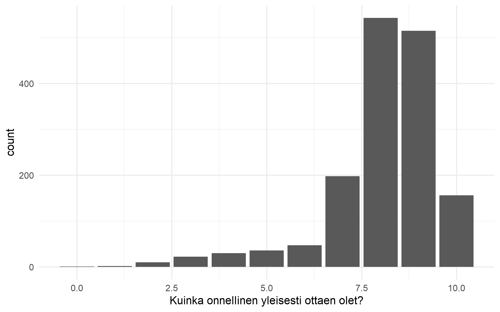
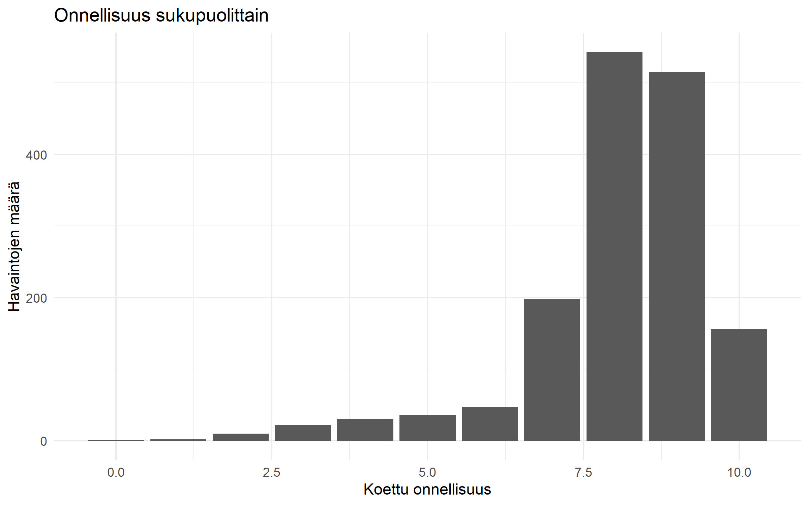

ESS2023 |> ggplot(aes(x = C1)) +
geom_bar()
Tässä osiossa esitellään yksi tapa tehdä kuvioita R:ssä. Se ei ole ainoa tapa, ja moni R-komento tekee sivutuotoksenakin kuvioita, mutta tämä on yleinen ja kaikkeen grafiikkaan soveltuva tapa, joka on hyvä osata. Kyseessä on ggplot2-paketin toteuttama grafiikan kielioppi (Grammar of Graphics). R:ssä ggplot2-paketti on Hadley Wickhamin kehittämä toteutus, joka on osa tidyverse-pakettikokoelmaa.
Perusajatus on se, että jokainen tilastokuvio voidaan rakentaa samanlaisista rakennuspalikoista. Riippumatta siitä mikä kuvio on kyseessä, se koostuu samanlaisista komponenteista, joita voidaan lisäillä kuvioihin.
ggplot(), aes(), geom_*()ggplot2-grafiikan peruskomponentit ovat ggplot(), aes() ja geom_*(). Näiden avulla voidaan rakentaa mikä tahansa tilastokuvio.
ggplot()-komennolla luodaan tyhjä grafiikka, johon määritellään aineisto.
Kuvion “estetiikka” määrittää, mihin muuttujia tai tunnuslukuja kuviossa sijoitellaan. Tämä määritellään aes()-komennolla. Komennolla määritellään esimerkiksi mitkä muuttujat asetetaan x- ja y-akselille, mikä määrittää (viivojen, pylväiden, pisteiden) väriä tai muotoa, ja niin edelleen.
geom_*()-komennot lisäävät kuvioon varsinaiset tilastografiikan elementit: esimerkiksi lisää kuvioon geom_point() hajontakuvion pisteet, geom_line() viivakuvion viivat tai geom_bar() pylväsdiagrammin pylväät.
Asioita lisätään kuvioon yksinkertaisesti +-merkillä erottamalla.
Yksinkertaisessa tapauksessa tarvitaan vain nämä kolme peruskomponenttia - esimerkiksi pylväskuvio syntyisi näin:
ESS2023 |> ggplot(aes(x = C1)) +
geom_bar()
Perussapluuna kuviolle on siis
aineisto |> ggplot(aes(x = x-muuttuja, y = y-muuttuja, väri = väri-muuttuja, …)) + geom_*()
Tätä sapluunaa voi laajentaa mielivaltaisesti. Lisätään esimerkiksi pylväskuvioon kolmanneksi muuttujaksi sukupuoli ja tehdään kuvioon otsikot sekä selitteet ja valitaan vielä teemaksi minimal, joka poistaa kuvion ylimääräiset elementit:
ESS2023 |> ggplot(aes(x = C1, fill = Sukupuoli)) +
geom_bar(position = "dodge") +
labs(title = "Onnellisuus sukupuolittain", x = "Koettu onnellisuus", y = "Havaintojen määrä", fill = "Sukupuoli") +
theme_minimal()
Tässä oppaassa esitellään kuvioita koskevissa luvuissa kunkin kuvion perussapluuna, ja sitten laajennetaan sitä erilaisilla tavoilla. Kuvion muokkaamisesta on oma lukunsa {@sec:kuvion-muokkaaminen}, jossa esitellään erilaisia tapoja muuttaa kuvion ulkoasua.
Yllä olevat komennot oletuksena tuottavat kuvion RStudion Plots-paneeliin tarkasteltavaksi. Sieltä sen tallennus onnistuu hiirelläkin, mutta ggsave()-komennolla kuvion tallennus onnistuu suoraan R-koodista. Kuvio tallentuu työhakemistoon. Formaatti määrittyy suoraan tiedostopäätteestä. Komennossa voi myös määrittää kuvatiedoston koon ja tarkkuuden.
ggsave("kuvio.png")
ggsave("kuvio.pdf")